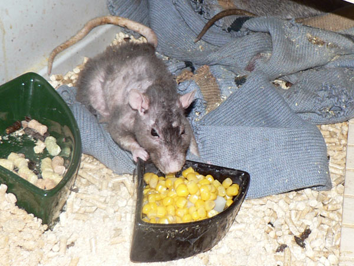
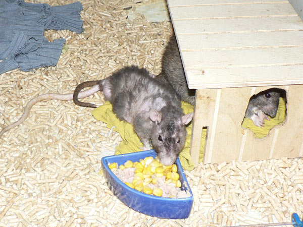
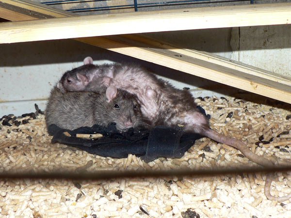
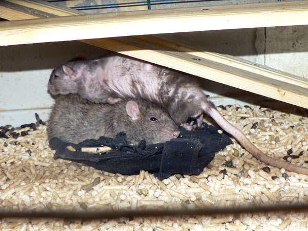
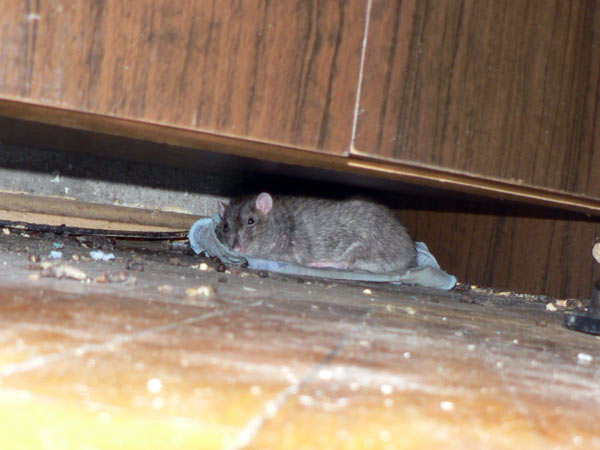

Грустная серия фото. Недавно праздновали трёхлетие, и вот...
Сентябрь Первый-Крылечкин (26 июля 2009 — 13 августа 2012, Black self rex)
Впрочем, по человеческой мерке возраст за 90, умер "на
ходу", судя по позе, скоропостижно.
Дольше его у нас прожил только дон Рэба из Крыскиного Теремка.
Впору завидовать, а всё равно тоскливо.
Циклон Б ушёл немного раньше, и Сеня очень его искал.
Задние ноги уже не ходили, он подтягивался на ручках, вываливался из клетки
и таким же образом ползал, искад друга. Если запирали -- грыз прутья, рвался
наружу...
В такие моменты как-то эмоционально понимаешь верующих: очень хочется
сказать, что сейчас он вместе с другом. А то и вообще "где-то там" ждёт
стайка из более чем двух десятков хвостатых...

Сеня косит глазом из окна.

Вполне бодрый старикан...

Даже зрение кое-какое оставалось после кровоизлияния в
глаз.
По-моему, умный взгляд.

Обитатели нижнего этажа...

Сравните шарик Терабайта и старичка Сентября.
Между прочим, Терабайту 2 года и три месяца -- возможно, тоже пойдёт на
рекорд.

Удобно спать на Терабайте!

Ну так чего? Пообщаемся?

Ну и ладно, полезу спать обратно.

В домике. Сеню почти не видно за Терабайтом.

Терабайт остался один. Постелил себе тряпочку под шкафом и не идёт в пустую клетку...